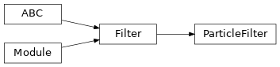

torchfilter.filters._particle_filter¶
Private module; avoid importing from directly.
Module Contents¶
Classes¶
Generic differentiable particle filter. |
-
class
torchfilter.filters._particle_filter.ParticleFilter(*, dynamics_model: DynamicsModel, measurement_model: ParticleFilterMeasurementModel, num_particles: int = 100, resample: Optional[bool] = None, soft_resample_alpha: float = 1.0, estimation_method: str = 'weighted_average')[source]¶ Bases:
torchfilter.base.FilterGeneric differentiable particle filter.
-
dynamics_model¶ Forward model.
-
measurement_model¶ Observation model.
-
num_particles¶ Number of particles to represent our belief distribution. Defaults to 100.
- Type
int
-
resample¶ If True, we resample particles & normalize weights at each timestep. If unset (None), we automatically turn resampling on in eval mode and off in train mode.
- Type
bool
-
soft_resample_alpha¶ Tunable constant for differentiable resampling, as described by Karkus et al. in “Particle Filter Networks with Application to Visual Localization”: https://arxiv.org/abs/1805.08975 Defaults to 1.0 (disabled).
- Type
float
-
estimation_method¶ Method of producing state estimates. Options include:
‘weighted_average’: average of particles weighted by their weights.
‘argmax’: state of highest weighted particle.
- Type
str
-
particle_states:torch.Tensor¶ Discrete particles representing our current belief distribution. Shape should be
(N, M, state_dim).- Type
torch.Tensor
-
particle_log_weights:torch.Tensor¶ Weights corresponding to each particle, stored as log-likelihoods. Shape should be
(N, M).- Type
torch.Tensor
-
initialize_beliefs(self, *, mean: types.StatesTorch, covariance: types.CovarianceTorch)[source]¶ Populates initial particles, which will be normally distributed.
- Parameters
mean (torch.Tensor) – Mean of belief. Shape should be
(N, state_dim).covariance (torch.Tensor) – Covariance of belief. Shape should be
(N, state_dim, state_dim).
-
forward(self, *, observations: types.ObservationsTorch, controls: types.ControlsTorch) → types.StatesTorch[source]¶ Particle filter forward pass, single timestep.
- Parameters
observations (dict or torch.Tensor) – observation inputs. should be either a dict of tensors or tensor of shape
(N, ...).controls (dict or torch.Tensor) – control inputs. should be either a dict of tensors or tensor of shape
(N, ...).
- Returns
torch.Tensor – Predicted state for each batch element. Shape should be
(N, state_dim).
-